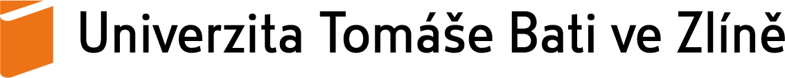
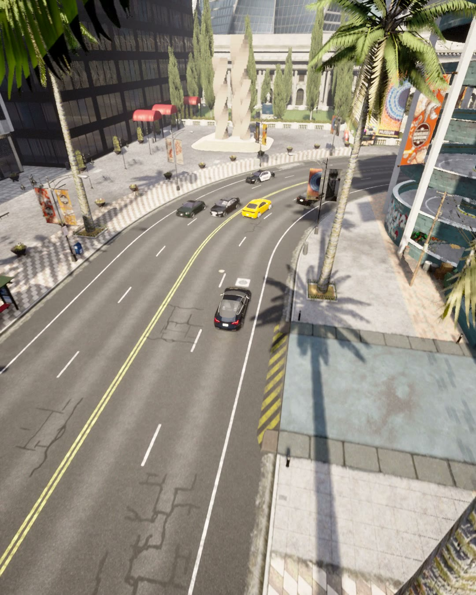
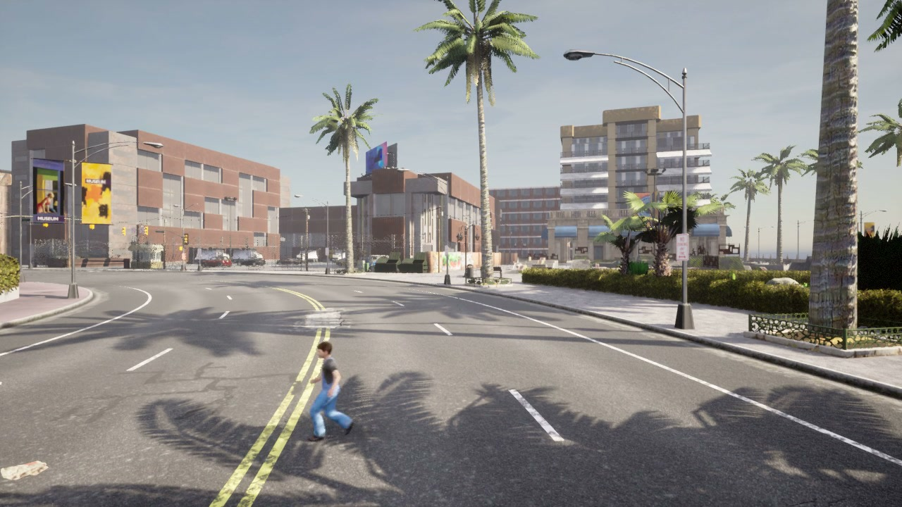
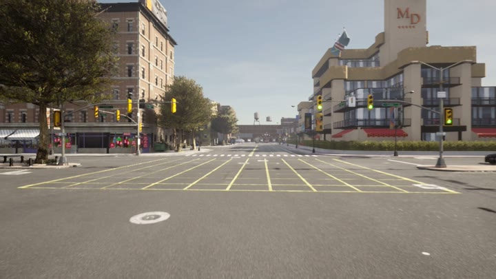
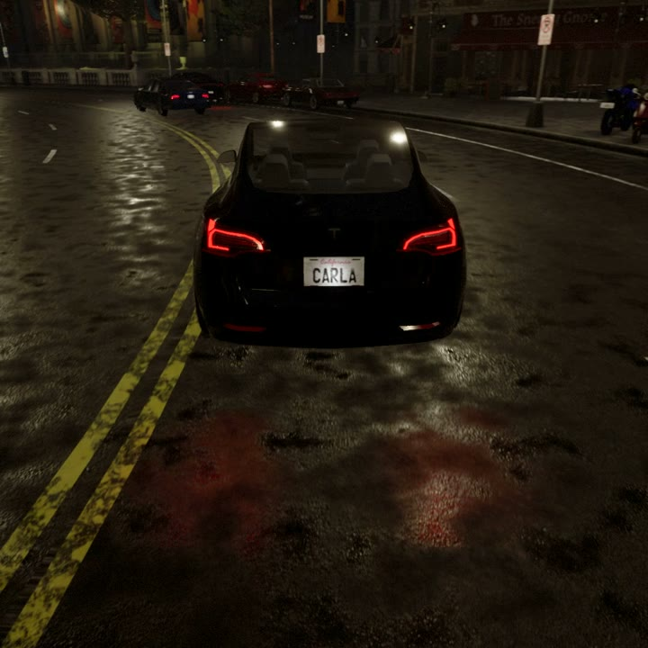
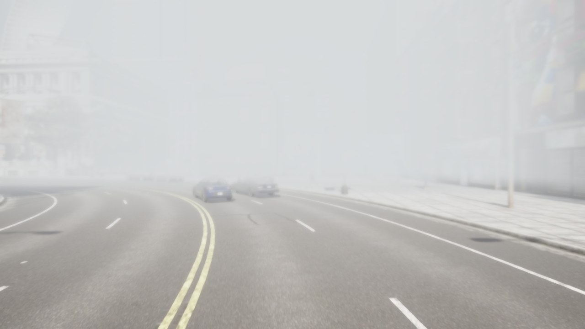
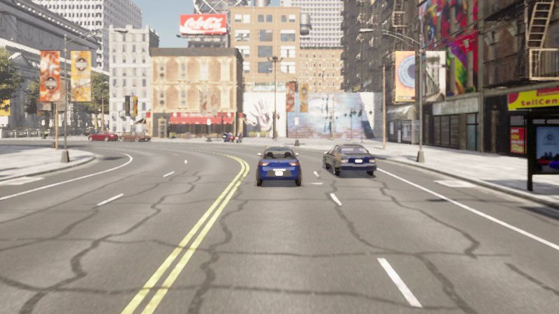
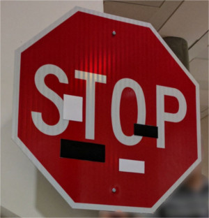

Semestrální práce · AP9BI
Zranitelnost kamerové percepce autonomních vozidel vůči útokům a možnosti obrany
Bc. Libor Výleta
Bezpečnost informačních systémů (AP9BI)
Univerzita Tomáše Bati ve Zlíně · Fakulta aplikované informatiky · 2026
Bezpečnost informačních systémů (AP9BI)
Univerzita Tomáše Bati ve Zlíně · Fakulta aplikované informatiky · 2026
1 jak auto vidí2 co umí útočník3 co jsem zjistil4 jak se bránit


1 · Jak auto vidí Sedli byste si do auta, které řídí jen kamera?
Auto se rozhoduje podle toho, co vidí kamera


semafory
noc
mlhaKamera je levná a jako jediná pozná barvy semaforů a značky.
Neuronová síť dostane jen pixely a sama v nich hledá auta a chodce.
V mé diplomce podle obrazu auto řídí a pojistka podle něj brzdí.
2
1 · Jak auto vidí · celý řetězec
Pojistka vidí jen to, co jí ukáže kamera
Kamerasnímek 1280×720
SEM MÍŘÍ ÚTOK
YOLOobdélník kolem auta + jistota 0–1Vzdálenostpodle toho, jak nízko auto stojí
Čas do srážkyTTC v sekundách
Pojistkapod 1,5 s → brzdi
Když YOLO auto nevidí,
pojistka nebrzdí.
Chybějící auto je pro ni volná silnice.
Útočník nemusí do počítače auta.
Stačí mu změnit, co kamera vidí.
3
1 · Jak auto vidí · YOLO tipujte
Kolik aut na tomhle snímku najde YOLO?

Kamera auta v CARLA (výřez), předtrénovaný YOLO11m, práh jistoty 0,25
Váš tip:
3 auta
Každé s jistotou a vzdáleností. Jedno auto vzadu nenašlo.
300 / 300
snímků záznamu, na kterých YOLO auto před námi našlo (bez narušení)
4
1 · Jak auto vidí · vzdálenost klikněte na písmeno ve vzorci, tabulce nebo obrázku
Vzdálenost se pozná podle toho, jak nízko auto stojí v obraze
Na silnici i v kameře je stejný úhel α, proto platí:
tan α = H / d = (v − cy) / ff plyne ze šířky snímku 1280 px a zorného úhlu 90°. Vzdálenost na obrázku je zkrácená. Kontrolní odhad z výšky obdélníku (auto vysoké 1,5 m): 640 · 1,5 / 57,7 ≈ 16,6 m.
=
· −
| f | ohnisková vzdálenost v pixelech | 640 px |
| H | výška kamery nad silnicí (držák nad střechou) | 2,3 m |
| v | řádek spodní hrany obdélníku (shora) | 447 px |
| cy | řádek středu snímku = horizont | 360 px |
| d | vzdálenost auta | ? |
Klikněte na kterékoli písmeno a ukáže se, co znamená a kde je na obrázku.
f = 1280 / (2 · tan 45°) = 640 px
d = 640 · 2,3 / (447 − 360) ≈ 16,9 m
d = 640 · 2,3 / (447 − 360) ≈ 16,9 m
5
1 · Jak auto vidí · čas do srážky a pojistka
Pojistka brzdí, když čas do srážky klesne pod 1,5 s
1
Čas do srážky
TTC = d / Δv
d vzdálenost [m] · Δv rychlost přibližování [m/s]
16,9 / 13,9 ≈ 1,2 s
2
Dráha zastavení
s = v·tz + v² / (2a)
tz zpoždění brzdy 0,1 s · a zpomalení 8 m/s²
13,9·0,1 + 13,9²/16 ≈ 13,4 m
3
Kdy začne brzdit
dbrzdi = T · v
T práh 1,5 s · v 50 km/h = 13,9 m/s
1,5 · 13,9 ≈ 20,8 m
6
2 · Co umí útočník
Útočníkovi stačí, aby kamera viděla něco jiného
Auto zmizí
Pojistka nebrzdí.
integrita
Objeví se fantom
Auto zbytečně prudce zabrzdí.
integrita dostupnost
Špatná vzdálenost
Pojistka brzdí pozdě.
integrita
Jak to udělá:
nálepka nebo záplata na značce či autě
světlo, LED nebo laser přímo do kamery
projektor nebo hacknutý billboard
Model znát nemusí: útok vyrobený na jednom modelu často zabere i na jiném.
7
2 · Co umí útočník hádejte, co se stalo
Ve skutečném světě to funguje. Co se stalo?

Pár černobílých nálepek na značce STOP
Co přečetla síť? ›
záměna
84,8 %
snímků z jedoucího auta: „rychlost 45“ Eykholt 2018
Potištěná cedule, kterou člověk drží před sebou
Kolik lidí detektor najde? ›
zmizení
26 %
osob najde YOLOv2 (bez cedule 100 %) Thys 2019
Značka STOP na okamžik v reklamě na billboardu
Co udělala Tesla? ›
fantom
zastavila
stačil fantom zobrazený na zlomek sekundy Nassi 2020
Pár malých nálepek na silnici v křižovatce
Kam Tesla odbočila? ›
fantom pruhu
protisměr
nálepky vzala jako pruh Tencent Keen Lab 2019
Infračervené LED za pár desítek dolarů namířené do kamery
Na jak dlouho kamera oslepla? ›
oslepení
5,3 s
celkem, vybavení pod 60 USD Petit 2015
Nenápadná záplata na zádi auta
O kolik se spletl odhad hloubky? ›
špatná vzdálenost
> 6 m
auto nalezeno v 5,2 % snímků videa místo 90,7 % Cheng 2022
8
3 · Co jsem zjistil · auto zmizí při jaké intenzitě auto zmizí?
Stačí světlo a auto před námi zmizí

intenzita světla0,0
Pojistka · auto před námi
Už při 0,4. Auto samo je přesvětlené, auto vedle detektor pořád vidí. Žádná chyba se nehlásí, auto prostě chybí.
9
3 · Co jsem zjistil · auto zmizí
Na celém záznamu: auto v pruhu mizí, auto vedle zůstává
10 s záznamu z CARLA, světlo na autě v pruhu sílí z 0 na 0,6. Simulace v obraze, ne fyzikální laser.
10 %
snímků s autem v pruhu při intenzitě 0,4
20 z 20
snímků s autem vedle při 0,4 i 0,6
10
3 · Co jsem zjistil · špatná vzdálenost zkuste to
YOLO auto vidí, jen ho špatně změří. Pojistka pak nebrzdí.
horizont cy = 360 px
⇕ v = 447 px
Posuňte spodní hranu rámečku
← výš = dálníž = blíž →
- YOLO auto vidí, ale spodní hranu rámečku nakreslí výš (chyba nebo útok).
- Vzorec si myslí, že auto stojí blíž horizontu, tedy dál.
- Vypočtený čas do srážky vyjde delší.
- Pojistka si myslí, že má čas, a nebrzdí, i když auto vidí.
Čím dál auto je, tím víc stejný posun vadí: 10 px znamená +7 % ve 10 m, ale +37 % ve 40 m. YOLO bez narušení se v 95 % snímků splete nejvýš o 3,1 px.
11
3 · Co jsem zjistil · co to udělá s brzděním hlasujte rukou
Detekce na chvíli vypadne. Zabrzdí auto včas?
50 km/h na stojící auto · brzdit má začít 20,8 m před ním · zastavit potřebuje 13,4 m
A
výpadek 0,3 s
zastavíasi 3,2 m před autem
B
výpadek 0,7 s
náraz asi 22 km/hrezerva 0,53 s nestačí
C
auto zmizí úplně
náraz 50 km/hpojistka vůbec nebrzdí
Délka výpadku: 0,30 s
zastaví
výpadek: jede dál bez brzděnízpoždění brzdy 0,1 sbrzdění (zastaví)brzdění (nestihne)
12
4 · Jak se bránit
Každý senzor vidí něco jiného. Spolu vidí víc.
Kamera
Barevný obraz: značky, semafory, pruhy.
+ pozná, co to je − vzdálenost jen odhaduje
LiDAR
Laserové pulzy: z doby letu odrazu změří vzdálenost.
+ přesná vzdálenost − barvy nevidí
Radar
Rádiové vlny: vzdálenost i rychlost, i v dešti a mlze.
+ rychlost, počasí − hrubý obraz
Snímek z CARLA. Body LiDARu jsou jen ilustrační, data z LiDARu nemáme.
Fúze s YOLO schéma
YOLO řekne co to je, LiDAR jak daleko. Když si odporují, je to podezřelé.
Moje diplomka LiDAR nemá, je čistě kamerová.
13
4 · Jak se bránit co fúze zachytí?
Fúze odhalí útok na jeden senzor, ne na oba
schéma · pohled shora
Kamera + YOLO
LiDAR
Fúze
| útok na | kamera + LiDAR | jen kamera |
|---|---|---|
| kameru | zachytí | nezachytí |
| LiDAR | zachytí | – |
| oba | nezachytí | nezachytí |
14
4 · Jak se bránit
Opravit jen model nestačí. Hlídat musí celé auto.
Uvnitř modelu: pomáhá jen zčásti
• trénink na útocích stojí přesnost i výkon
• záruka odolnosti jen pro malé změny obrazu
• 6 z 9 nových obran bylo obejito úplně
Na úrovni celého auta: účinnější
• víc senzorů a jejich porovnání (fúze)
• sledování v čase: útok jen na detektor by musel vyjít ve víc než 98 % snímků
• jednoduchý nezávislý hlídač
Co na to předpisy:
UN R155kybernetická bezpečnost aut je povinná. Útoky na AI výslovně nezmiňuje.
UN R156bezpečné aktualizace softwaru, třeba nového modelu
ISO/SAE 21434analýza hrozeb a rizik (TARA)
ISO/PAS 8800AI ve vozidlech, ale safety, ne útoky
15
4 · Jak se bránit · co si beru do diplomky
Čtyři problémy, čtyři řešení
problém
řešení v pojistce
Auto na pár snímků zmizísvětlo, nálepka, výpadek
Auto chvíli „držet“Kalmanův filtr ho předpovídá, nezahodí ho po prvním chybějícím snímku
Podvržená vzdálenostposunutý obdélník
Dva odhady vzdálenostiz roviny silnice a z výšky obdélníku. Velký rozdíl = podezřelé.
Oslepená kamerapřesvětlený snímek
Výpadek není volná silnicehlásit poruchu kamery a opatrně zpomalit
Testy jen s čistým obrazemslabiny se neukážou
Testovat i s narušeným obrazempojistku zkoušet i se simulovaným oslepením
16
Shrnutí
Co si odnést
Problém
Pojistka věří kameře a kameru jde ošálit, i u sériových aut.
Měření
Bez narušení 300/300 snímků, chyba způsobená detektorem 2,5 %. Se světlem auto zmizí už při 0,4.
Nebezpečí
Výpadek detekce delší než 0,53 s při 50 km/h znamená srážku.
Řešení
Sledovat v čase, kontrolovat věrohodnost, výpadek brát jako poruchu.
Do diskuse: Má auto při výpadku kamery raději zabrzdit, i když to může být planý poplach?
17
Zdroje
Literatura a předpisy použité v prezentaci
ATHALYE, A., CARLINI, N., WAGNER, D. Obfuscated Gradients Give a False Sense of Security. ICML, 2018.
CAO, Y. a kol. Invisible for both Camera and LiDAR: Security of Multi-Sensor Fusion based Perception. IEEE S&P, 2021.
CHENG, Z. a kol. Physical Attack on Monocular Depth Estimation with Optimal Adversarial Patches. ECCV, 2022.
COHEN, J., ROSENFELD, E., KOLTER, Z. Certified Adversarial Robustness via Randomized Smoothing. ICML, 2019.
DEDE, G. a kol. Cybersecurity Challenges in the Uptake of Artificial Intelligence in Autonomous Driving. ENISA/JRC, 2021.
DOSOVITSKIY, A. a kol. CARLA: An Open Urban Driving Simulator. CoRL, 2017.
EYKHOLT, K. a kol. Robust Physical-World Attacks on Deep Learning Visual Classification. CVPR, 2018. (obrázek značky STOP převzat)
ISO/SAE 21434:2021 Road vehicles – Cybersecurity engineering. ISO/PAS 8800:2024 Road vehicles – Safety and artificial intelligence.
JIA, Y. a kol. Fooling Detection Alone is Not Enough: Adversarial Attack against Multiple Object Tracking. ICLR, 2020.
JOCHER, G., QIU, J. Ultralytics YOLO11 [software]. 2024.
KALMAN, R. E. A New Approach to Linear Filtering and Prediction Problems. J. Basic Engineering, 1960.
LEE, D. N. A Theory of Visual Control of Braking Based on Information about Time-to-Collision. Perception, 1976.
MADRY, A. a kol. Towards Deep Learning Models Resistant to Adversarial Attacks. ICLR, 2018.
NASSI, B. a kol. Phantom of the ADAS: Securing Advanced Driver-Assistance Systems from Split-Second Phantom Attacks. ACM CCS, 2020.
PAPERNOT, N. a kol. Practical Black-Box Attacks against Machine Learning. ASIA CCS, 2017.
PETIT, J. a kol. Remote Attacks on Automated Vehicles Sensors: Experiments on Camera and LiDAR. Black Hat Europe, 2015.
SHA, L. Using Simplicity to Control Complexity. IEEE Software, 2001.
SHOSTACK, A. Threat Modeling: Designing for Security. Wiley, 2014.
STEIN, G. P., MANO, O., SHASHUA, A. Vision-based ACC with a Single Camera: Bounds on Range and Range Rate Accuracy. IEEE IV, 2003.
TENCENT KEEN SECURITY LAB. Experimental Security Research of Tesla Autopilot. 2019.
THYS, S., VAN RANST, W., GOEDEMÉ, T. Fooling Automated Surveillance Cameras: Adversarial Patches to Attack Person Detection. CVPRW, 2019.
UNECE. UN Regulation No 155 (kybernetická bezpečnost) a No 156 (aktualizace softwaru). 2021.
VASSILEV, A. a kol. Adversarial Machine Learning: A Taxonomy and Terminology. NIST AI 100-2 E2025, 2025.
YAN, C., XU, W., LIU, J. Can You Trust Autonomous Vehicles: Contactless Attacks against Sensors of Self-driving Vehicle. DEF CON 24, 2016.
YEONG, D. J. a kol. Sensor and Sensor Fusion Technology in Autonomous Vehicles: A Review. Sensors, 2021.
Vlastní měření: snímky ze simulátoru CARLA, YOLO11m, skripty demo/mereni.py a demo/snimky_pro_prezentaci.py. Mlha na slidu 2 je simulovaná úpravou snímku (demo/mlha_pro_prezentaci.py).
18
Děkuji za pozornost
prostor pro otázky
Semestrální práce · AP9BI
Zranitelnost kamerové percepce autonomních vozidel vůči útokům a možnosti obrany
Bc. Libor Výleta
Bezpečnost informačních systémů (AP9BI)
Univerzita Tomáše Bati ve Zlíně · Fakulta aplikované informatiky · 2026
Bezpečnost informačních systémů (AP9BI)
Univerzita Tomáše Bati ve Zlíně · Fakulta aplikované informatiky · 2026
1 jak auto vidí2 co umí útočník3 co jsem zjistil4 jak se bránit